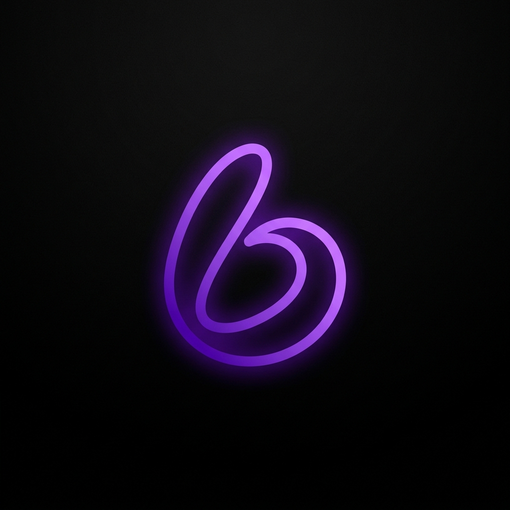

LowBrowserLowBrowser için özel hazırlanmış lüks renk şablonları.
Renkleri dilediğiniz gibi karıştırın, canlı önizlemede anında izleyin ve kendi temanızı kaydedin.
Daha önce kaydettiğiniz özel temalar. Tek tıkla geri yükleyebilir veya silebilirsiniz.
Tarayıcının anlık bellek ve işlemci tüketimi.
Arka planda kullanılmayan boş sekmelerin RAM tüketimini otomatik dondurur. Müzik çalan veya indirme yapan sekmeler korunur.
Adres çubuğuna yazılan aramaların yönlendirileceği ana motor.
Beyaz arka planlı siteleri koyu temaya çevirirken uygulanacak filtre güçleri.
İnternet sorgularınızı şifreleyerek ISS takibini engeller, erişim engellerini aşar ve sitelerin daha hızlı yüklenmesini sağlar.
Kullanmak istediğiniz şifreli DNS sunucusunu belirleyin.